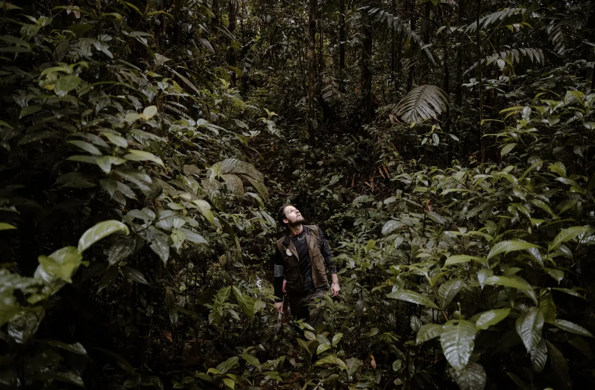
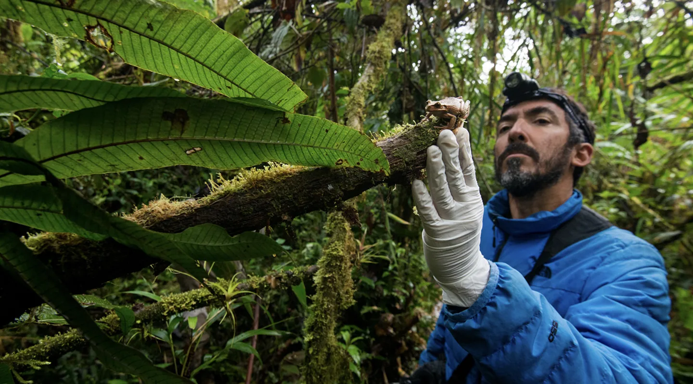
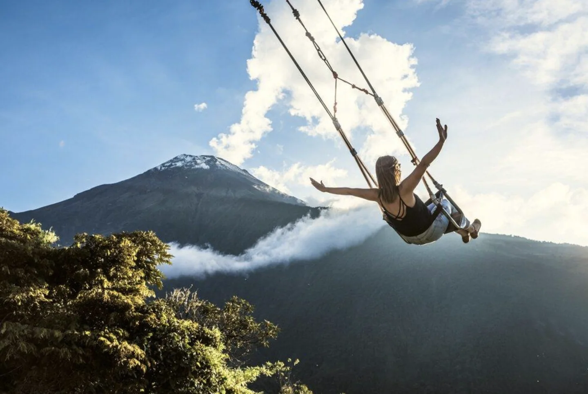
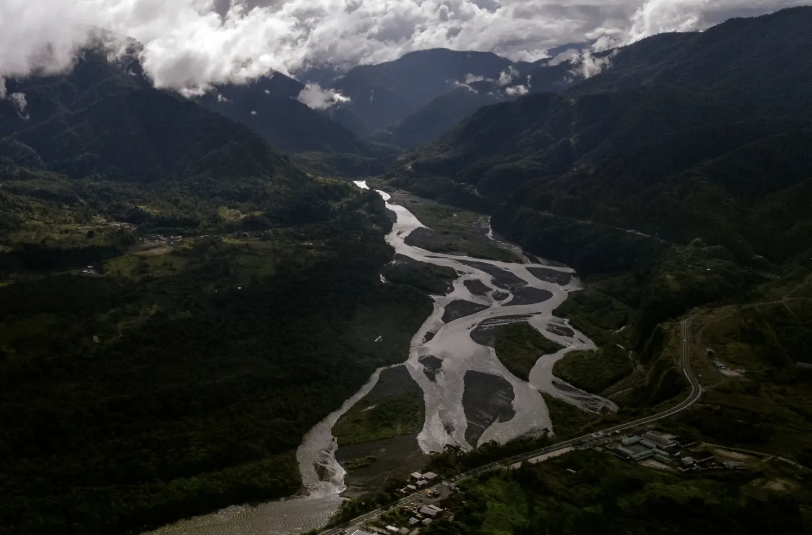
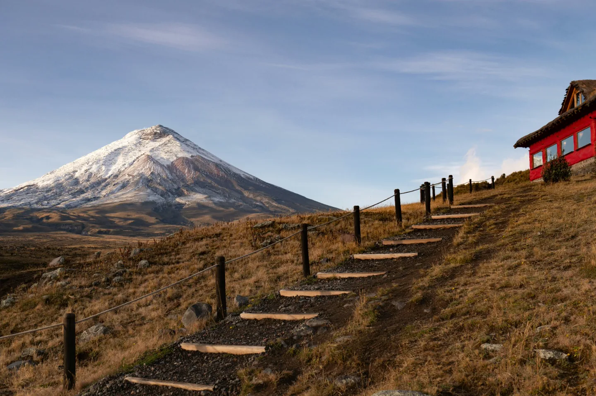

Frivilligt arbejde
Bidrag til lokale projekter, der gør en forskel for mennesker og lokalsamfund.
Kulturelle oplevelser for unge danskere, der vil mere end at rejse: deltag i lokale projekter, mød fællesskaber, og få erfaringer, du kan tage med dig videre.
Se den første oplevelseOplev Latinamerika på en anden måde.
LULO forbinder unge i Danmark med internationale oplevelser i Latinamerika, hvor kultur, lokale projekter og hverdagsliv mødes. Vi skaber muligheder for at udforske regionen gennem aktiviteter, der giver dig et indblik i livet uden for de velkendte rammer.
Vi tror på, at mødet med en ny kultur kan åbne vores øjne for andre måder at leve, tænke og forstå verden på.
Med LULO ønsker vi at skabe meningsfulde internationale oplevelser, hvor mennesker kan møde lokale fællesskaber, lære gennem nye erfaringer og skabe forbindelser på tværs af kulturer.
Vi starter i Latinamerika med en ambition om at bygge bro mellem Europa og Latinamerika gennem kulturel udveksling, læring og autentiske oplevelser.
For os handler det ikke kun om, hvor du tager hen, men også om, hvad du oplever, hvem du møder, og hvad du tager med dig hjem.
Bidrag til lokale projekter, der gør en forskel for mennesker og lokalsamfund.
Få praktisk erfaring og lær gennem virkelige arbejdsopgaver , ikke kun i et klasselokale.
Lær spansk ved at bruge sproget i hverdagen og tale med lokale.
Del hverdagslivet, maden og historierne med mennesker fra en anden kultur, og tag oplevelserne med dig hjem.
Første oplevelse
Oplev Ecuador på en anderledes måde.
En oplevelse på cirka en måned, hvor natur, videnskab, kultur og eventyr mødes. Vælg det, der interesserer dig mest, eller kombinér alle tre områder for at skabe en oplevelse, der passer til dig.

Oplev Ecuadors rige biodiversitet gennem vandreture i regnskoven, overvågning af dyrelivet, naturbevarelse og praktisk arbejde i naturreservater.

Vær med til at overvåge krybdyr og padder, indsamle insekter og undersøge dyrelivet ved hjælp af kamerafælder. Lær teknikker til indsamling og registrering af prøver, og bidrag til udarbejdelsen af en videnskabelig artikel.

Besøg oprindelige folks lokalsamfund og lokale markeder, oplev traditionelle dyrkningsmetoder og lokale projekter, og udforsk Puyos etnobotaniske have, vandfaldene i Baños, Andesbjergenes páramo-landskab og Quitos historiske centrum.


Vi udvikler meningsfulde oplevelser på tværs af Latinamerika. Ecuador er vores første destination, mens Colombia og Peru er blandt de lande, vi håber at udforske i fremtiden.
Vores første oplevelse
Oplev Amazonas, Andesbjergene og lokale fællesskaber gennem LULOs første program.
Oplev EcuadorKommer snart
Vi håber at kunne tilbyde LULO-oplevelser i Colombia i fremtiden. Programmerne er stadig under udvikling.
Kommer snart
Peru er endnu en destination, vi undersøger med henblik på fremtidige LULO-oplevelser.
For unge, der er i gang med eller planlægger et sabbatår. Hvis du ønsker mere end en traditionel ferie og vil bruge din tid i udlandet på at lære, opleve og udvikle dig, er LULO måske noget for dig.
Vælg den oplevelse og de datoer, der passer til dit sabbatår.
Vi hjælper med det praktiske og tager hul på din spansklæring.
Bliv en del af dit projekt og fællesskabet i Ecuador.
Kom hjem med nye kompetencer, nye venner og et stærkere CV.
Vores historie begyndte med en rejse, en fælles nysgerrighed og en kærlighed til at opleve verden.
Jeg hedder Fernanda og kommer oprindeligt fra Ecuador, mens Lukas er fra Danmark. Vi mødte hinanden, mens Lukas rejste rundt i Latinamerika i sit sabbatår. Vi opdagede hurtigt, at vi delte en passion for at rejse, udforske nye kulturer og møde mennesker med forskellige baggrunde.
Det, der begyndte som et møde mellem to mennesker fra forskellige dele af verden, blev til et fælles liv i Danmark og en fælles vision.
Som par med forskellige kulturelle baggrunde oplever vi, hvor meget vi kan lære af hinandens kulturer og perspektiver. Det inspirerede os til at stille spørgsmålet: Hvordan kan vi dele vores passion for internationale oplevelser med andre?
Sådan opstod idéen til LULO: et initiativ, der skal bringe mennesker, kulturer og muligheder tættere sammen.
Velkommen til LULO. Lad os sammen opdage, hvad der venter.
Om osFølg LULO på Instagram for nyt om oplevelsen i Ecuador, eller send os en direkte besked, hvis du har spørgsmål.
Følg LULO på Instagram